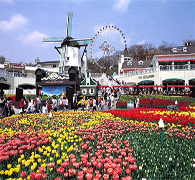

Everland

Address
Gyeonggi-do Yongin-si Cheoin-guPogok-eup Jeondae-ri 310
Type
Amusement parks
Inquiries
1330 tt call center: +82-31-1330 (Korean, English, Japanese, Chinese)
For more info: +82-31-320-5000 (Korean, English, Japanese, Chinese)
Inquiries
1330 tt call center: +82-31-1330 (Korean, English, Japanese, Chinese)
For more info: +82-31-320-5000 (Korean, English, Japanese, Chinese)
Homepage
everland.com (Korean, English, Japanese, Chinese)
Introduction
Everland Resort was opened in 1976 as the first family park in Korea. Though originally called ‘Yongin Jayeon Nongwon,’ the company changed its name to ‘Everland’ to make the name more recognizable to international audiences. The park is home to over 40 heart-pounding rides and attractions. In addition to ‘Safari World’ featuring white tigers, tigers, lions and bears, ‘Herbivore Safari’ opened in April 2010, letting visitors get up close and personal with the safari’s giraffes, elephants, and ostriches. Everland is also known for its gorgeous flower arrangements and beautiful gardens, which have been year-round fixtures since the Rose Festival in 1985. Other great spots for family fun are the Snow Sled (the first and the longest of its kind in Korea), Caribbean Bay (an outstanding water park) and Everland Speedway (a racing track). Full of exciting attractions and entertainment, Everland is one of the most popular places in Korea for families, friends, and couples.
* Everland
’Dreams Become Reality, the Land of Year-Round Festivals!’
Everland is divided into five sections: American Adventure, Magic Land, European Adventure, Zoo Topia and Roller Coasters, in addition to the Global Fair.
Located near the front entrance of Everland, the Global Fair is home to a large bazaar decorated with reproductions of castles from France, Middle Eastern countries, Spain, India, and Russia. Not only visually captivating, the various architectural styles invite visitors into the culture and history of other nations, such as the Ancient and Medieval Periods of Europe.
The Four Seasons Garden of Everland is decorated with beautiful flowers arranged in a French garden style. Surrounded by Holland-style architecture, the gardens are the stage for seasonal flower festivals (tulips from April to June, lilies from July to August, and chrysanthemums from September to October), laser shows, and musical fountain shows.
The Zoo Topia section of the park is the where guests can find the ever-popular Safari World and Herbivore Safari. In safari world white tigers, tigers, lions, and bears roam around freely, providing guests with an up-close look at these amazing creatures. In Herbivore Safari, visitors can even feed some of their favorite animals like elephants, giraffes, camels, and ostriches.
* Caribbean Bay
Opened in 1996, Caribbean Bay is a huge water park equipped with multiple attractions and health facilities. Modeled after the pristine beaches of the Caribbean and decorated with Spanish-styled stone buildings, palm trees, tropical plants, and a shipwreck, guests will feel like they’ve taken a tropical vacation without ever leaving the country.
Caribbean Bay has a number of hair-raising waterslides and a relaxing lazy man river. The Sea Zone generates waves over 2.4m-high and is a huge crowd favorite. If you need a break from the sun, escape to the Indoor Water Park to enjoy the Wave Pool, Children’s Pool, or the various spa-like facilities with herbal treatments using jasmine, peppermint, lemon, ginseng, and mugwort. Cold and hot bath areas are also available. Caribbean Bay is a unique water park that not only provides a thrilling water park experience, but also the best in spa and relaxation facilities.
* Everland Speedway
The first car racing track in Korea, Everland Speedway offers thrilling car races year-round (such as Motor Championship Contest).
* The Glen Ross Golf Club
Running under the same principles of course management as the renowned Anyang Benest, the Glen Ross Golf Club is a beautiful golf with excellent facilities that are sure to earn a spot in even the most avid golfer’s heart. The club is conveniently located near Everland, the Ho-Am Art Museum, and several gardens (for more information, call +82-31-320-9600).
* Spooky’s Fun House
Opening in February 2003 and located in Magic Land, Everland, the Spooky Fun House offers visitors a fun-filled journey in the world of magic and mystery, led by the cute little ghost, ‘Spooky.’ Build in collaboration with the world-famous attraction design company HEIMO (Germany) the Spooky Fun House is an entertainment facility fueled by the curiosity of the visitor. Pressing bells, pushing photo frames, or simply passing through corridors unleashes fresh bouts of fun sounds and visual effects.
Activity information
* Safari World: 15 minutes
- Observe herbivores and carnivores at close range
- The Safari Bus Tour has been extended with the opening of the Herbivore Safari.
Operating hours
09:30-22:00 (Mon-Sat) / 09:00-22:00 (Sunday & Holidays)
* Operating hours are subject to change.
* Please visit Everland Homepage before your visit.
Parking facilities
15,000 spaces available for free.
Admission fees
* One-day Pass
- Daytime: Adults 40,000 won / Teenagers 34,000 won / Children 31,000 won
- Nighttime: Adults 33,000 won / Teenagers 28,000 won / Children 25,000 won
* Two-day Pass
Adults: 64,000 won / Teenagers: 55,000 won / Children: 50,000 won
* Admission Ticket
- Daytime: Adults 33,000 won / Teenagers 28,000 won / Children 25,000 won
- Nighttime: Adults 26,000 won / Teenagers 24,000 won / Children 22,000 won
* Children: ages 3-12 / Teenager: ages 13-18
* Nighttime tickets are available starting from 17:00.
Baby Stroller Rentals
Available (Rental fees: 4,000 won / 10,000 won for twins)
Pets
Not permitted (except guide dogs)
Directions
Subway + Bus
1) Gangnam Station (Seoul Subway Line 2 or Sinbundang Line), Exit 5 or 10.
Take bus 5002 to Everland. (Travel time: 50 min)
2) Gangbyeon Station (Seoul Subway Line 2), Exit 1.
Take bus 5800 to Everland. (Travel time: 50 min)
3) Sadang Station (Subway Lines 2, 4), Exit 2 or 3.
Take bus 1500-2 to Everland. (Travel time: 80 min).
City bus
In Yongin or Suwon, take bus 66 or 66-4 to Everland.
From Yongin Bus terminal.
Take bus 5002 or 5800 at the bus stop in front of Hotel Cinema.